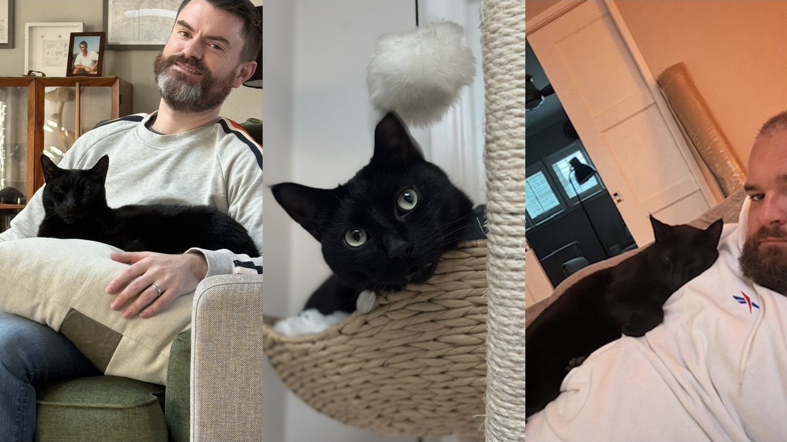

One of the most uncomfortable things I’ve ever admitted is that I grieved losing Bobby, my cat, more intensely than I grieved when my dad died.
It’s not a sentence that performs particularly well in polite company.
Even typing it makes me want to attach a disclaimer, three character references and evidence that I did, in fact, love my father. For a long time, I feared the intensity of my grief meant that I hadn’t loved him enough.
It didn’t.
Grief is a terribly governed function. It ignores hierarchy, refuses to follow policy and pays no attention to the number of days HR has assigned to a relationship. As someone who likes order, I find this deeply irritating.
Grief is personal. It is shaped by the relationship, the circumstances of the loss and the place someone occupied in your daily life. It doesn’t follow the hierarchy we think it should.
A smooth operator
I grew up surrounded by animals and always knew I wanted one in my life. My work schedule was insane, and a cat seemed like the animal I could responsibly care for.
Johnny did not want a cat, so we reached the sort of balanced marital compromise on which successful relationships are built: we got a cat.
I went to a shelter in Los Angeles and brought home Bobby. Always adopt.
Bobby was a smooth operator. He was observant, incredibly smart and emotional. He studied Johnny and me, identified our weak points and exploited them with remarkable precision.
He built himself into our routines. When I worked, he would sit on my desk watching me. Part emotional support, part surveillance. Mostly, he was calculating whether my next trip to the kitchen might result in a treat. He approached every movement in that direction with the optimism of a cat who had never once been fed.
The appearance of a suitcase was immediately understood. It meant I was leaving. Bobby would become extra cute and affectionate in a last-minute attempt to stop me. When that failed and I eventually returned, he would ignore me for several days. Bobby believed strongly in consequences.
He and Johnny connected immediately. Bobby correctly identified that Johnny needed affection, as most Cancers do. He would sit on Johnny’s lap, snuggle into him and lie on top of him at night until they both fell asleep.
The cat Johnny didn’t want was soon sleeping on top of him every night. Johnny’s original position on cats did not survive contact with an actual cat.

Watching Johnny love Bobby made me love Johnny even more. Bobby returned the favour by loving Johnny considerably more than he loved me, despite the minor detail that I had rescued him from the shelter system.
Typical.
We had decided that children weren’t for us, but we never held a family strategy session and decided: no children, yes cats. Bobby wasn’t a substitute for anything. He was simply someone we both loved and cared for.
He was our shared joy.

The day the house went quiet
Then Bobby was taken by coyotes.
Johnny tried to save him and impaled his arm on the fence. His arm was badly damaged and he had to get to hospital urgently. The entire day became a terrifying whirlwind of injury, panic and loss.
That evening, I came home without either of them.
Johnny was in hospital. Bobby was gone. The house that had held the three of us that morning suddenly felt empty and loveless.
I sat down and cried.
What I hadn’t understood until Bobby was gone was how important the love I received from him had been. It was uncomplicated and unconditional. Bobby didn’t care about my title or whether I was holding everything together. He just loved me.
Losing that broke me.
Then, almost immediately, I tried to fix how I felt.
I did what any Virgo who works in compliance would do: I tried to turn devastation into an action plan. Identify the issue. Develop a solution. Drive it to resolution.
Grief declined to cooperate.
I started looking for another cat. That is difficult to admit because it sounds as though I thought Bobby could simply be replaced. In my grief-addled logic, the house had a cat-shaped hole, so perhaps another cat could fill it.
Bear was a tiny kitten. We loved him, and we still love him. But he wasn’t Bobby.
Bear wasn’t failing at anything. I was asking a tiny kitten to solve something no living thing could solve.
It made the grief worse because the routines weren’t the same. The relationship wasn’t the same. I had confused a Bobby-shaped hole with a cat-shaped hole. They aren’t the same.
Grading my own grief
My father had been sick for a long time. Toward the end, his quality of life was awful. His death was still shocking, but there was also some relief in knowing that his suffering had ended.
There was no relief in losing Bobby. There had been no long illness, no time to prepare and no sense that something painful had finally come to an end. It was sudden, violent and traumatic.
That doesn’t mean I loved Bobby more than my father. It means I experienced the losses differently.
But I didn’t understand that at the time. If Bobby’s death hurt me more, perhaps I hadn’t cared enough about my dad.
So I wasn’t only grieving Bobby. I was also putting myself on trial for how I had grieved my father. I was the accused, the prosecutor and a deeply unsympathetic judge.
I grew up around animals, but I also grew up around rural life. A lot of people around me saw animals as tools or maintained a certain emotional distance from them. I’m still shocked when I see dogs that are never allowed in the house or cats that don’t get the warm spot on the bed.
Apparently, this is where I have drawn my firmest moral line.
My dad was like that with most animals, except our childhood dog, Kerry. Kerry was the first reason I ever saw my dad cry that wasn’t Tottenham losing.
Kerry had reached somewhere in him that most things didn’t. Tottenham, unfortunately, managed it with much greater frequency.
Perhaps that should have taught me something. The capacity for this kind of love had always been there. We just weren’t particularly good at talking about it.
Yes, I’m fine
People at work knew what had happened to Bobby and Johnny. What they didn’t know was how completely it had broken me.
I could explain deeply technical regulatory risk to a room full of executives, but I couldn’t say, “My cat died and I am not functioning.” I felt that people wouldn’t understand how much I had loved him, and I was embarrassed to admit how badly I was struggling.
So I deployed the great Irish emotional-management strategy: get on with it and hope nobody asks a follow-up question.
If someone asked whether I was okay, I said yes and changed the subject. Efficiently.
Being a leader didn’t make me less devastated. It just gave me a full calendar of places to hide.
Looking back, I didn’t need someone to recite the bereavement policy. I needed someone to say, “When my cat died, the light in my life died too. Shall we cancel our afternoon meetings, put on black veils and retire from public life?”
Dramatic? Obviously. But I would have felt completely understood.
The veil was optional. The recognition wasn’t.
Most people have children, so the centre of their emotional universe may look very different from mine. Mine included a cat sitting on my desk, a husband underneath that cat every night and an unreasonable number of almost identical photographs of Bobby looking handsome.
I stand by every photograph.
Bobby was not our child, and I don’t need to pretend those relationships are identical to justify our grief. He was woven into our home, our routines and our relationship.
He was our shared joy. Then, without warning, he wasn’t there.
Johnny went quiet after Bobby died. He was grieving while also dealing with a badly injured arm. We were both in enormous pain and both trying to be strong for the other. In attempting to protect each other, we probably left ourselves carrying more of it alone.
The deeply annoying truth
It took me about eight months to understand that I couldn’t fix the grief, replace Bobby or outrun it.
The only way to make it manageable was to go through it, which felt offensively inefficient.
I would have preferred a shortcut, a checklist and a button I could press to mark the entire experience complete. None existed.
After Bobby died, we hid all his photographs. This was no small undertaking because, like every cat owner, I had documented virtually every facial expression he had ever made.
Even a glimpse of him was heartbreaking. Avoiding the photographs felt like self-preservation, but it also meant avoiding all the joy contained in them.
Gradually, I allowed myself to look again. I allowed myself to cry. I learned to say, “I’m really sad today,” without immediately trying to explain, minimize or correct the feeling.

The grief didn’t go away. I don’t think it does. It became something I could carry.
Now, when I look at a photograph of Bobby, I remember the joy in that moment before I remember the pain of losing him. There is still a pang because I can’t reach into the photograph and tell him how handsome he is.
He would have accepted the compliment as a simple statement of fact.
Tell me about them
Losing Bobby changed how I respond when someone tells me they are grieving.
I ask questions.
“Let’s talk about them. Tell me about them.”
I don’t decide in advance whether the relationship was significant enough to justify the pain. Grief does not need to pass a materiality threshold. I don’t make someone defend why a particular loss has affected them so deeply. I let them tell me who they lost and what that person or animal meant to them.
HR policies are remarkably confident about grief.
A policy might say four days for a parent and two for a grandparent. Somewhere, grief has been converted into an Excel formula.
Apparently, a grandparent is exactly 50% as devastating as a parent. I would love to see the methodology.
A beloved animal may not appear in the policy at all. Apparently, a relationship doesn’t become real until somebody can find it in a dropdown menu.
I understand why policies need definitions and why companies need consistency. But an administrative category is not an emotional truth.
Everyone’s grief is different because every relationship is different. Life doesn’t work according to a classification table.
Love is love. Grief is grief.
And Bobby was never “only” a cat.
He was clever, manipulative and extremely handsome. He sat on my desk, monitored my trips to the kitchen, punished me for travelling and slept on the man who had insisted he didn’t want him.
He was our shared joy.
I still wish I could tell him how handsome he is.
Although, knowing Bobby, he already knew.
I just wish I could tell him again.
Explore more: Leadership & Identity or Being Irish in America.